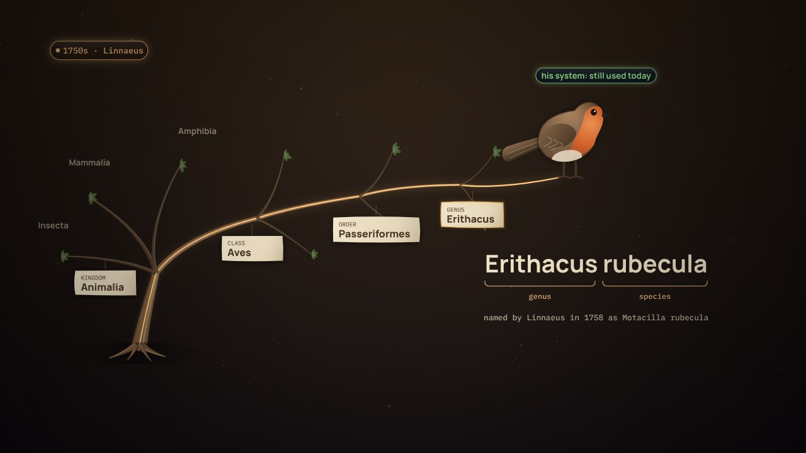

← Previous · Film 6 of 7
Meaning machines can read
An assistant answers from the meaning it can read. Glossary, taxonomy, ontology and semantic layer stack.
The meaning is written down end to end, from a word to a number. Then the world changes again, and an AI agent can watch, draft and check, while people decide.
Builds on the whole series
Press Play, or pick a chapter. Turn on Pause and think to stop for one question at the end of chapters.
Download the videoCaption filesRead the script
Where next?
The five Pause and think questions, for a class or a team. Open one to see the answer.
Film 7 of 7.

← Previous · Film 6 of 7
An assistant answers from the meaning it can read. Glossary, taxonomy, ontology and semantic layer stack.